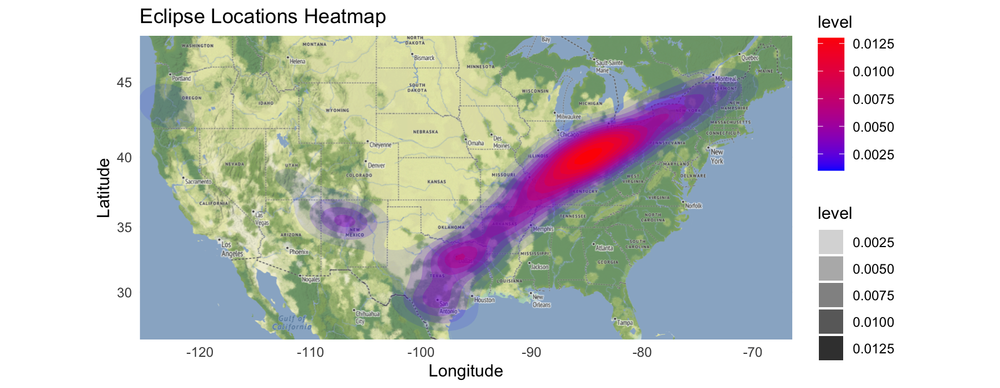
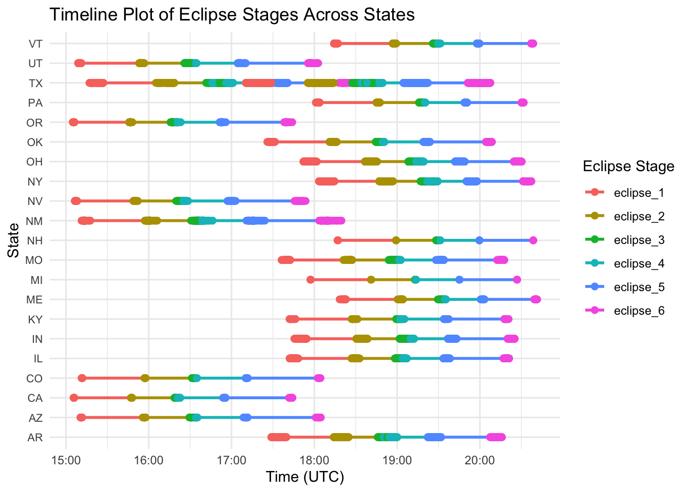

What’s the Big Deal About Solar Eclipses?
Imagine standing outside on a sunny day, only to see the sky gradually darken as the moon glides in front of the sun. The experience of a solar eclipse is one of the most awe-inspiring natural events that we can witness on Earth. And in 2024, the United States is in for a double treat: both an annular and a total solar eclipse will cross different regions of the country. But where should you be to get the best view? And when exactly will the eclipse unfold? This blog dives into the analysis I conducted on the timing and duration of these celestial events across various U.S. states, helping you plan for the perfect eclipse-viewing experience.
The Data Behind the Eclipses: Where Does It Come From?
To explore the solar eclipses of 2024, I utilized a dataset a dataset provided by the TidyTuesday project on GitHub . This dataset is based on data from NASA’s Scientific Visualization Studio, a leading source of highly accurate astronomical information. The dataset includes key variables such as the geographical coordinates of eclipse locations, times of eclipse contact points (when the eclipse begins and ends), and the total duration of the event for each state.
Before diving into the analysis, I conducted a quick review of the dataset and do a Data Preprocessing. Fortunately, it was already clean and complete, with no missing values or problematic outliers. I did a basic format conversion of the dataset before analyzing it. For example, time data in HMS format can be accurately parsed into standard timestamps for subsequent analysis and visualization. Once that was done, I was ready to generate insightful visualizations.
- Data Cleaning and Preprocessing:After checking, the dataset has been cleaned alredy, and no missing values or outliers have been found. I did a basic format conversion of the dataset before analyzing it. For example, time data in HMS format can be accurately parsed into standard timestamps for subsequent analysis and visualization.
Visualizing the Eclipses: Where and When to Catch the Best Views
Heatmap: Where Are the Eclipse Hotspots?
To help visualize where the eclipses will be most prominent across the U.S., I created a Heatmap. This heatmap displays the density of solar eclipse events, with darker red areas representing regions with more intense eclipse activity. Figure 1 below illustrates how the eclipse will track from the southwestern U.S. toward the northeast, with the most significant activity centered in the Midwest and South Central regions.
Timeline Plot: When Will the Eclipse Happen?
Knowing when the eclipse will occur is just as important as knowing where. Using a Timeline Plot Figure 2, I mapped out the different stages of the eclipse across U.S. states. The plot clearly illustrates how the timing of the eclipse varies by location.

Data Description Table 1：
| Variables | Description |
|---|---|
| state | The U.S. state where the observation was made. |
| name | Name of the location where the eclipse was observed. |
| lat | Latitude of the location (in decimal degrees). |
| lon | Longitude of the location (in decimal degrees). |
| eclipse_1 | Time of the first eclipse contact (in HH:MM:SS format). |
| eclipse_2 | Time of the second eclipse contact (in HH:MM:SS format). |
| eclipse_3 | Time of the third eclipse contact (in HH:MM:SS format). |
| eclipse_4 | Time of the fourth eclipse contact (in HH:MM:SS format). |
| eclipse_5 | Time of the fifth eclipse contact (in HH:MM:SS format). |
| eclipse_6 | Time of the sixth eclipse contact (in HH:MM:SS format). |
| duration | Total duration of the eclipse event (in seconds). |
| Type | The year of the eclipse (e.g., ‘Annular 2024’, ‘Total 2024’). |
What Did We Learn?
The analysis reveals significant differences in the timing and duration of solar eclipses across the United States. Central regions, particularly the Midwest and South Central states, will experience longer and more intense phases of both the annular and total eclipses. These regions provide the most exciting viewing opportunities, with the longest durations offering plenty of time to observe this celestial wonder. Additionally, this research highlights the value of combining data visualization with geographical data to provide practical insights to the public. The heatmap and timeline plot offer an easy-to-understand snapshot of when and where the eclipses will occur.
What’s Next?
This analysis gives a solid overview of where and when solar eclipses will be visible in the U.S. during 2024, along with how long each phase will last. But this is just the beginning! There’s still much to explore, such as how these eclipses might impact the environment, including temperature shifts and effects on wildlife. Stay tuned for more on that in future studies.
References
Harmon, J. (2024) Github. Available at: https://github.com/rfordatascience/tidytuesday/tree/master/data/2024/2024-04-09 (Accessed: 02 September 2024).
Types of solar eclipses - NASA science (no date) NASA. Available at: https://science.nasa.gov/eclipses/types/ (Accessed: 03 September 2024).
Wikipedia contributors. (2024, September 5). Solar eclipse. Wikipedia, The Free Encyclopedia. https://en.wikipedia.org/wiki/Solar_eclipse
Bressler, N. M. (2024). Safely viewing a solar eclipse. JAMA Ophthalmology, 142(4), 377. https://doi.org/10.1001/jamaophthalmol.2024.0401